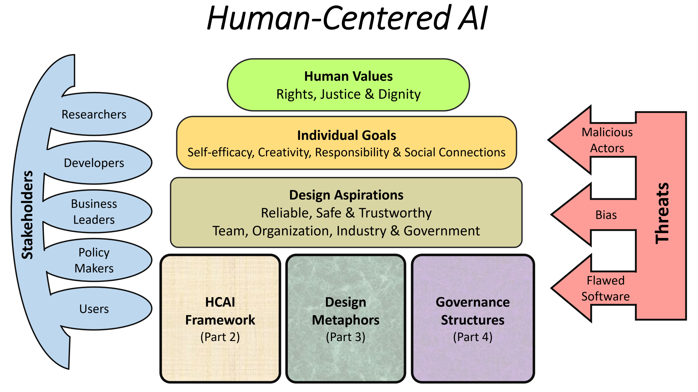

.jpg)
SEPTEMBER 15-18
Human-centric AI: How to make ‘People Matter’
Summary
Human-centered AI learns from human input and collaboration, focusing on algorithms that exist among a larger, human-based system. Human-centered AI is defined by systems that are continuously improving because of human input while providing an effective experience between human and robot.
A human-centric AI world should not just be about corporate profits. Stakeholder capitalism requires a paradigm change in how we monetize AI and the rules we place on it. But a lot of the PR in the “AI for good” narrative is fake.
From a business standpoint, human-centered AI solutions leverage human science and qualitatively thick data to understand the deeper needs, aspirations and drivers that underlie customer behaviors in your market. We know AI will monetize new fields of health technology. But what will be the moral, spiritual and privacy costs? If DeepMind can predict my outcome as a patient, is that a more human-centric world where my care and experience will be more personalized?

How will humans actually work with AI in the future of society? AI’s purpose is to help humans, but without human input and understanding, it can only help so much. Taking a human-centric AI approach puts some of the computational heavy lifting on the shoulders of technology while still leveraging emotional and cognitive input from human beings. Giving AI too much control or impact in our systems could be dangerous.
Artificial intelligence—software that appears to mimic or exceed human reasoning, rather than simply automating repetitive tasks—is already reshaping business and society. But its morality and oversight is clearly not its strong point as engineers and product people blindly focus on monetization without seeing the big picture.
We want to work in companies with human-centric AI ideals but where are they? Not likely in Silicon Valley. Not likely in state-controlled China. I would argue that true human-centric AI ideology has yet to be truly born because human beings still don’t understand what they are creating with more algorithmic, data and AI-centric institutions, lifestyles and experiences.